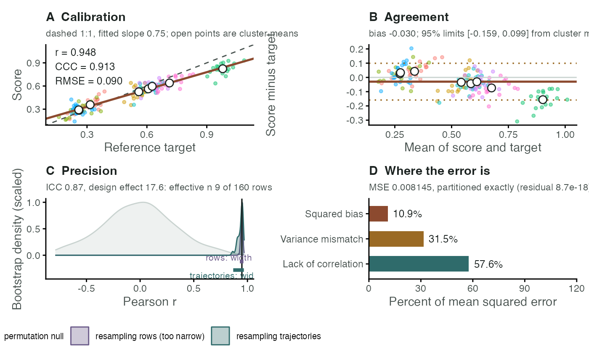

Four-panel diagnostic figure for an accuracy assessment
Source:R/plot_rri_accuracy.R
plot_rri_accuracy.RdDraws the figure that accompanies rri_accuracy(). Each panel answers a
question a single correlation coefficient cannot: whether the score is
calibrated, whether disagreement grows with level, how much precision the
clustering costs, and which kind of error dominates.
Usage
plot_rri_accuracy(
acc,
panels = c("calibration", "agreement", "precision", "error"),
score_label = "Score",
target_label = "Reference target",
point_alpha = 0.45,
show_clusters = NULL,
base_size = 11,
ncol = 2
)Arguments
- acc
An object of class
rri_accuracyfromrri_accuracy(), created withn_boot > 0so that the resampled statistics are available.- panels
Character vector selecting panels, any of
"calibration","agreement","precision"and"error". Defaults to all four.- score_label, target_label
Axis labels for the score and the reference target.
- point_alpha
Opacity of the individual observations. Lower it when trajectories overplot.
- show_clusters
Logical, or
NULLto decide automatically. Colours observations by cluster. SetFALSEabove roughly 20 clusters, where the colouring stops being informative.- base_size
Base font size passed to
theme_ems().- ncol
Number of columns in the assembled figure. Ignored when patchwork is unavailable.
Value
If patchwork is installed, a single assembled patchwork
object. Otherwise a named list of ggplot objects, so nothing is lost
when the suggested package is absent.
Details
Panel A, calibration. Score against target, with the 1:1 line dashed and the fitted line solid. Perfect agreement puts the points on the dashed line; a solid line flatter than it means the score compresses the target's range, and one displaced from it means a systematic bias. Open points are cluster means, the level at which these units are independent.
Panel B, agreement. A Bland-Altman plot: the difference between score and target against their mean, with the mean difference and the limits of agreement. A scatter that fans out, or that slopes, shows that disagreement depends on level, which a correlation coefficient cannot reveal. Because observations are clustered, the limits come from cluster means; row-level limits would be far too tight.
Panel C, precision. The bootstrap sampling distribution of \(r\) under row resampling and under trajectory resampling, with both intervals drawn beneath. The difference in width is the cost of treating repeated observations of one unit as independent observations of many. The permutation null, when computed, sits behind them for reference.
Panel D, error. Mean squared error split into squared bias, variance mismatch and lack of correlation. The three sum to the mean squared error exactly, so the panel is a partition rather than an approximation.
Colours follow the package's chemistry-derived palette: teal for redox, rust for iron, violet for manganese, ochre for cautionary annotation.
See also
rri_accuracy() for the statistics the figure displays.
Examples
set.seed(1)
k <- 8; m <- 20
unit <- rnorm(k, 0, 0.30)
target <- unlist(lapply(unit, function(u) u + 0.5 + rnorm(m, 0, 0.05)))
score <- 0.75 * target + 0.10 + rnorm(k * m, 0, 0.06)
traj <- rep(seq_len(k), each = m)
acc <- rri_accuracy(score, target, cluster = traj,
n_boot = 200, n_perm = 200, seed = 1)
p <- plot_rri_accuracy(acc)
# \donttest{
print(p)

# }